Módulo de Seguridad
- Introducción
- 1.1 Grupos de seguridad
- 1.2 Usuarios
- 1.3 Roles
- 1.4 Permisos
- 1.5 Grupos de acceso
1. Introducción
En el apartado de seguridad del panel de control se encuentran las herramientas para gestionar la seguridad de todo el sistema. Desde aquí podrá dar de alta usuarios, roles con permisos y grupos de acceso que definirán el nivel de acceso a la información de los usuarios que utilicen la aplicación.
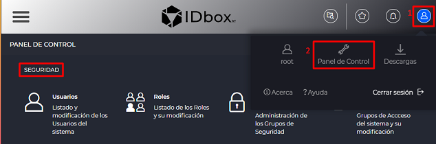
El acceso al módulo de seguridad se realiza desde el icono de usuario – botón Panel de control
1.1 Grupos de seguridad
El usuario que consulta la sección Grupos de seguridad podrá ver todos los grupos asociados a dicho usuario. En función del rol asignado al usuario, desde la sección Grupos de seguridad se podrá dar de alta nuevos grupos de seguridad o modificar o borrar los existentes.
El concepto de grupo de seguridad se puede aplicar para empresas matriz y sus empresas hijo o para los departamentos de una empresa.
Cada grupo de seguridad tiene su propio tema visual y se le pueden asociar Roles y Grupos de acceso a documentos y señales separado de los otros grupos. El usuario únicamente verá los elementos disponibles de su Grupo de Seguridad, si tiene varios grupos asociados, el que tenga configurado como ‘Grupo de seguridad por defecto’ en su Perfil.
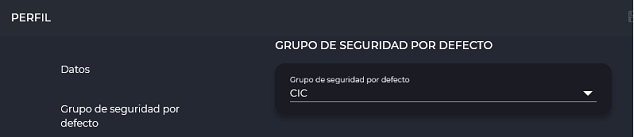
Al abrir la sección se mostrará una tabla con los grupos de seguridad a los que pertenezca el usuario. La tabla mostrará el Nombre, Descripción, Logo y si está Activo.
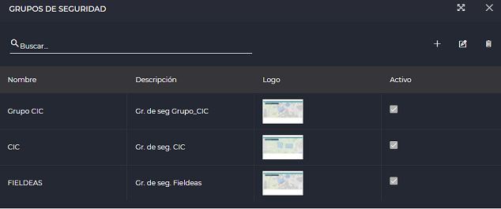
En la parte superior derecha de la tabla aparecen iconos para añadir un nuevo grupo o editar o borrar un grupo seleccionado.
Al pulsar sobre el icono para agregar un nuevo grupo de seguridad se abrirá el formulario que permite configurar las caracteristicas del grupo de seguridad.
El formulario está estructurado en 2 partes:
-
Datos
-
Padre
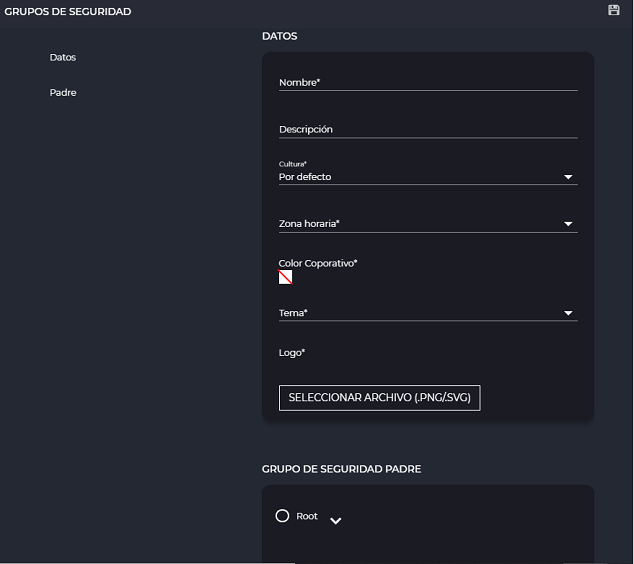
En el caso de modificar un grupo existente, la pantalla anterior tendrá cargados los datos del grupo correspondiente, permitiendo su modificación.
Características configurables:
-
Nombre: Nombre del grupo de seguridad
-
Descripción: Descripción del grupo de seguridad
-
Cultura: Permite seleccionar la cultura para el grupo de seguridad
-
Zona horaria: Permite configurar la zona horaria por defecto
-
Color corporativo: Despliega el selector de color. El color seleccionado será el color del tema del grupo de seguridad.
-
Tema: Permite seleccionar el tema por defecto del grupo de seguridad (Light o Dark).
-
Logo: Logo del grupo de seguridad. Abrirá un cuadro de diálogo del navegador para cargar el archivo con formato PNG o SVG. El logo aparecerá como icono de la aplicación si se está visualizando este grupo de seguridad (si está seleccionado en el apartado ‘Grupo de seguridad por defecto’ del formulario Perfil).
-
Grupo de seguridad padre: Se podrá asignar un grupo de seguridad padre para el grupo que se está configurando.
Para guardar los cambios seleccionar el icono de guardar .
Al crear un grupo de seguridad automáticamente se crean 2 roles (Administrador y Viewer) y un grupo de acceso (Default).
En cualquier punto se facilita la opción de cambiar el grupo de seguridad que se está utilizando actualmente como referencia a la hora de visualizar, crear y guardar en la web. A través del selector situado en la parte superior derecha que muestra la siguiente imagen, es posible en primer lugar visualizar el grupo de seguridad actualmente seleccionado así como utilizar el desplegable para elegir un grupo de entre los disponibles.
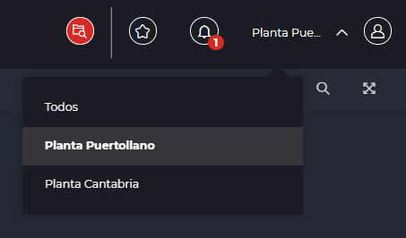
De este modo, al elegir un nuevo grupo, la web se actualizará para adaptar su vista a dicha perspectiva en cuanto a permisos y contenido. Es importante tener en cuenta que el grupo de seguridad de referencia actual es una elección individual personalizada en el navegador que quedará recordada hasta que se cierre éste o la sesión, siendo totalmente independiente del grupo de seguridad por defecto que esté seleccionado en el perfil del usuario.
1.2 Usuarios
La sección Usuarios permite dar de alta nuevos usuarios y visualizar, gestionar (activar o desactivar, eliminar, modificar características y permisos) de los usuarios existentes en el sistema.
La pantalla de Usuarios se compone de una tabla que muestra, para cada uno de ellos, su nombre, apellidos, nombre de usuario, si está activo (aparece marcada la casilla de verificación correspondiente) y su correo electrónico.
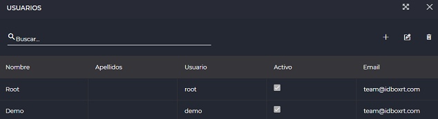
Al pulsar sobre el icono para agregar un nuevo usuario se abrirá el formulario que permite configurar las características del usuario.
El formulario está estructurado en 3 partes:
- Datos
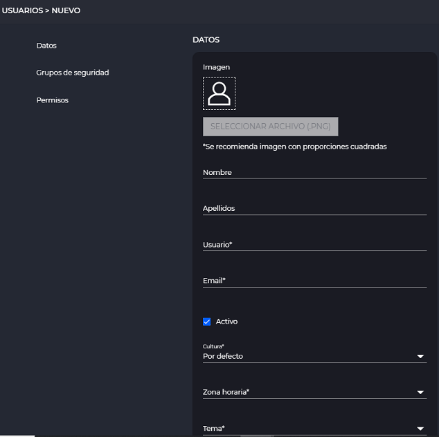
- Grupos de seguridad
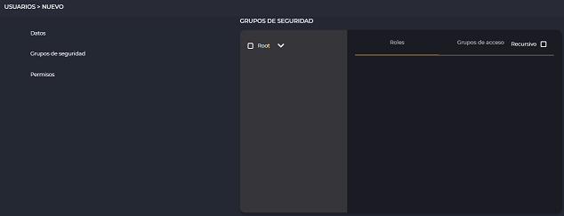
- Permisos
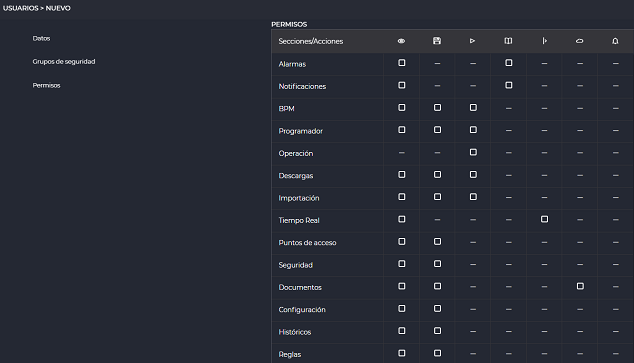
En el caso de modificar un usuario existente, la pantalla anterior tendrá cargados los datos del usuario correspondiente, permitiendo su modificación. Adicionalmente se mostrará una nueva sección: “Opciones avanzadas”.
- Opciones avanzadas
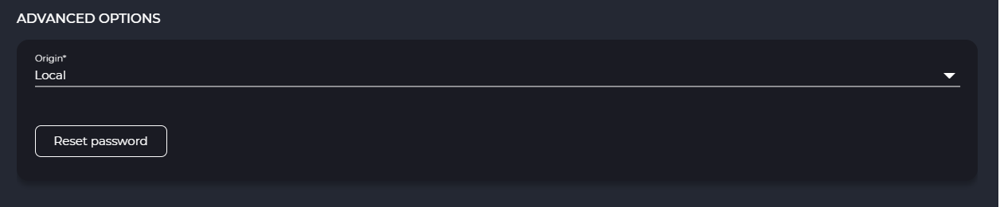
Características configurables:
-
Imagen, Nombre, Apellidos, Usuario, Email, Cultura, Zona horaria, Tema (detalladas en el apartado Perfil): Si en cultura se deja la opción Por defecto al usuario se aplicará la cultura del grupo de seguridad al que pertenece.
-
Activo: Si está marcado, habilita el usuario. En caso de estar desmarcado, el usuario no se podrá loguear, no podrá acceder a la aplicación.
-
Grupos de seguridad: En el primer cuadro (izquierda) se muestra un árbol con los grupos de seguridad disponibles (se despliegan pulsando en la flecha correspondiente). Al marcar los grupos de seguridad a los que se quiere vincular al usuario en el cuadro de la derecha, en las 2 pestañas aparecen los roles y los grupos de acceso asociados a los grupos de seguridad seleccionados. Marcar el rol y los grupos a los cuales pertenecerá el usuario.
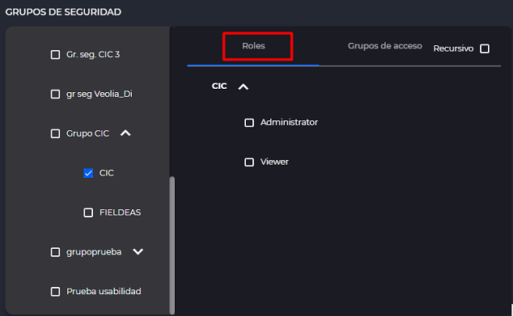
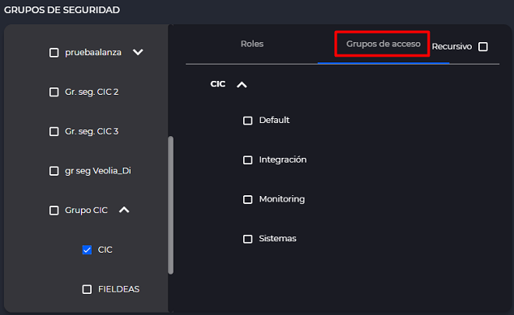
- Permisos: En este apartado se muestra una tabla con los distintos permisos asignables para cada sección. Al pasar el cursor por encima de los iconos de la cabecera de la tabla (1) se muestra las acciones sobre las cuales se da permiso. El usuario tendrá los permisos de las casillas marcadas con un check (2). El permiso que tiene un guion (3) significa que no aplica a nivel de dicha sección. Se puede pulsar en el icono de una acción concreta para seleccionar todas las secciones de esa acción.
Estos permisos pueden verse restringidos o ampliados en función de la configuración del rol del grupo de acceso asignado.
- Opciones avanzadas : Este apartado nos brinda dos opciones. Una es resetear la contraseña del usuario pulsando en el botón “Resetear contraseña”. La otra es modificar el origen de usuario “Local”, “LDAP” o “Externo”. “LDAP” se utilizará para los usuarios que sean de LDAP cuando tengamos uno configurado. “Externo”, serán los usuarios que se loguean por ejemplo con Google, si es que lo tenemos configurado. “Local” son todos los demás usuarios, los que creamos normalmente en esta pantalla.
La primera vez que el nuevo usuario se registre, la aplicación le obligará a cambiar la contraseña:
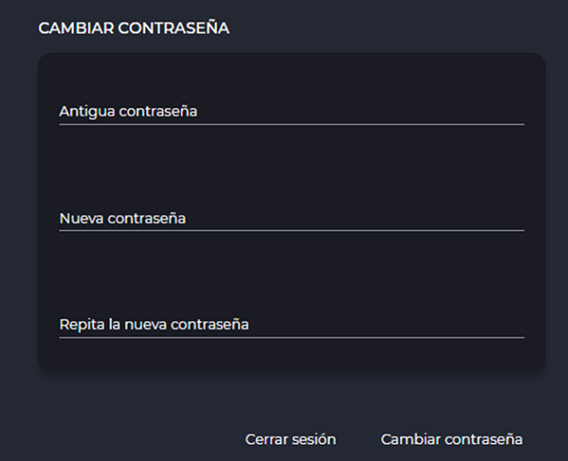
1.3 Roles
La sección Roles permite ver el listado de roles disponibles para los distintos grupos de seguridad. También permite gestionarlos (dar de alta nuevos roles, modificarlos o eliminarlos), si se tienen permisos.
Los Roles permiten agrupar un conjunto de permisos para un Grupo de seguridad. Al asignar un Grupo de seguridad a un usuario, seleccionando el rol correspondiente se le otorgan dichos permisos.
La pantalla de Roles se compone de una tabla que muestra, para cada uno de ellos, su nombre, descripción, el grupo de seguridad al que pertenecen y si están activos.
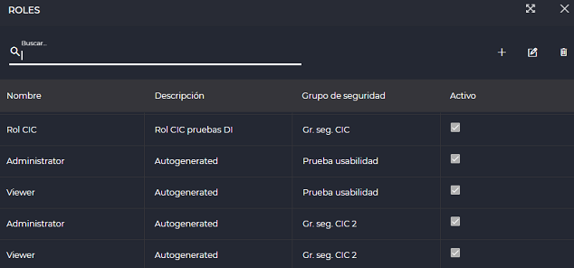
En la parte derecha aparecen tres botones que permiten crear un nuevo rol , editar y borrar el rol seleccionado.
Al pulsar sobre el icono para agregar un nuevo rol IDbox se abrirá el formulario que permite configurar las características del rol.
El formulario está estructurado en 3 partes:
-
Datos
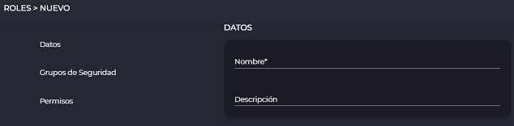 -
Grupos de seguridad
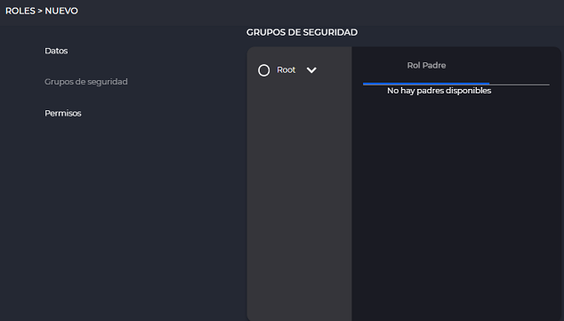 -
Permisos
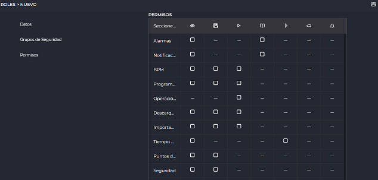
En el caso de modificar un rol existente, la pantalla anterior tendrá cargados los datos del rol correspondiente, permitiendo su modificación.
Características configurables:
-
Nombre: Identificador del rol.
-
Descripción: Descripción del rol.
-
Grupos de Seguridad: En el primer cuadro (izquierda) se muestra un árbol con los grupos de seguridad disponibles (se despliegan pulsando en la flecha correspondiente). El rol debe pertenecer a un grupo de seguridad y sólo puede pertenecer a uno.
-
Rol Padre: Muestra los otros Roles existentes del Grupo de Seguridad seleccionado. Al seleccionar un padre, el rol heredará todos los permisos del padre. Al rol hijo se le podrán añadir permisos adicionales
Nota: Para seleccionar un padre desmarcar la opción No seleccionar.
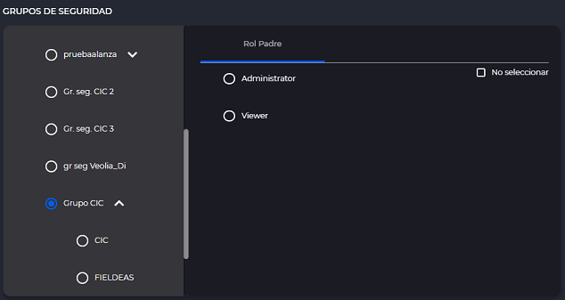
Al dar de alta un grupo de seguridad la aplicación crea automáticamente 2 roles: Administrador y Viewer. En el formulario de cada uno de estos 2 roles se podrán consultar los Permisos correspondientes.
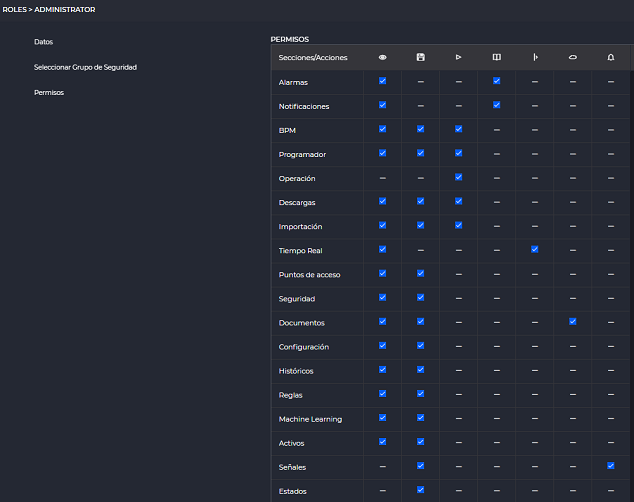
- Permisos: Muestra una tabla con los permisos para cada sección. Al pasar el cursor por encima de los iconos de la cabecera de la tabla (1) se muestra las acciones sobre las cuales se da permiso. El usuario tendrá los permisos de las casillas marcadas con un check (2). El permiso que tiene un guion (3) significa que no aplica a nivel de dicha sección. Se puede pulsar en el icono de una acción concreta para seleccionar todas las secciones de esa acción.
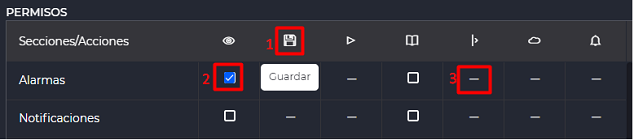
Para guardar los cambios seleccionar el icono .
1.4 Permisos
A continuación, se detallará la configuración de Permisos en los formularios nuevo/editar Usuarios y Roles.
Los permisos se muestran en una tabla donde la intersección de una fila con una columna representa un permiso.

1.5 Grupos de acceso
La sección Grupos de acceso mostrará los grupos de acceso asociados al usuario conectado.
Los grupos de acceso habilitan la lectura o lectura/escritura sobre un conjunto de documentos, señales, habilita o no el acceso a un sitio.
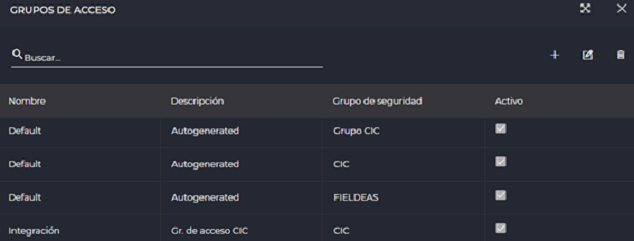
Los grupos de acceso accionan como un filtro sobre qué elementos puede interactuar el usuario conectado.
Un grupo de acceso solo puede tener asignados usuarios que pertenecen al grupo de seguridad en el que se da de alta el grupo de acceso.
Los permisos definidos en un grupo de acceso prevalecen frente a los permisos de usuario o frente a los permisos de un rol. El permiso de lectura sobre un grupo de acceso prevalece sobre los permisos de escritura de un rol.
Los grupos de acceso permiten que personas con roles iguales puedan acceder a diferente información dependiendo a que grupos de acceso pertenezcan.
Arriba a la izquierda hay un buscador para filtrar los grupos que se muestran. Arriba a la derecha hay tres botones: añadir (+) o editar (lápiz) o borrar (papelera) un grupo existente (si se tienen los permisos correspondientes).
La tabla con los grupos de acceso mostrá el Nombre, Descripción, Grupo de seguridad (al que pertenece el grupo de acceso) y si está Activo.
Al agregar un nuevo grupo de seguridad aparecerá una pantalla como la siguiente (en el caso de estar editando un grupo existente, aparecerá la misma pantalla con los datos cargados del grupo que se está modificando):
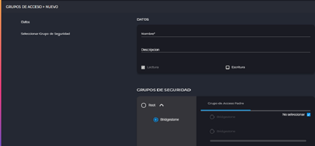
Los campos configurables en el apartado ‘Datos’ son:
Nombre: Nombre para el grupo de acceso.
Descripción: Descripción del grupo de acceso.
Lectura: Casilla para los permisos de lectura. Aparece marcada por defecto y no se puede modificar.
Escritura: Casilla para los permisos de escritura. Habilita permisos de escritura para el grupo de acceso.
En el apartado Grupo de seguridad aparece un árbol desplegable con los nodos de los distintos grupos de seguridad a los que está asociado el usuario conectado. El grupo de acceso que se configure debe asociarse a un grupo de seguridad (campo obligatorio).
Grupo de Acceso Padre permite asociar un padre al grupo de acceso. El padre será seleccionable entre los grupos de acceso vinculados al grupo de seguridad seleccionado antes.
Para guardar los cambios seleccionar el icono de guardado (disquete).